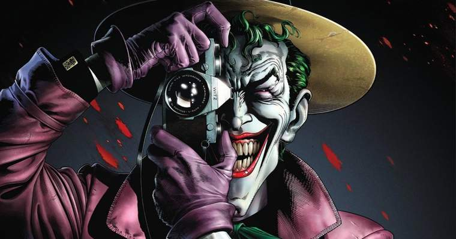

CORINGA
O personagem não tem habilidades sobre-humanas, mas usa a sua inteligência para desenvolver misturas tóxicas e/ou letais, bem como armamentos temáticos, incluindo cartas de jogo com pontas cortantes, campainhas de brinquedo mortais e flores de lapela que projetam ácido.
Apesar de por vezes trabalhar com outros super-vilões, como o Pinguim e o Duas-Caras, e em grupos como Gangue da Injustiça e Liga da Injustiça, tais relações acabaram muitas vezes por entrar em colapso devido ao constante desejo do Joker em procurar o caos desenfreado.
A década de 1990 introduziu um par romântico ao personagem na forma da sua ex-psiquiatra do Asilo Arkham, Arlequina, que se torna inclusive sua parceira no crime. Apesar da sua grande obsessão ser o Batman, o Joker já foi adversário de outros heróis como o Superman e a Mulher Maravilha.
